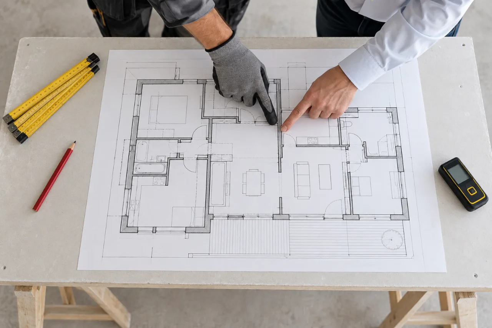

Netzwerk & Zusammenarbeit
Ein Ansprechpartner. Viele Gewerke im Blick.
Rund um eine Immobilie fallen oft Arbeiten mehrerer Gewerke an. Wir übernehmen, was in unseren Leistungsumfang fällt. Für alles Weitere wissen wir, wen wir fragen – und Sie wissen vorher, wer was macht.
Offener Punkt
[FREIGABE ERFORDERLICH: Welche Gewerke sind tatsächlich im Netzwerk, und in welcher Form arbeiten Sie zusammen (Subunternehmer unter eigener Rechnung, Koordination oder reine Empfehlung)? Erst danach Gewerke namentlich nennen – bis dahin sind sie ausdrücklich als Beispiele gekennzeichnet.]
So arbeiten wir
Vom Vorhaben zum abgestimmten Netzwerk
Eigene Leistung – Ihr Vertragspartner ist GashiniFachbetrieb, koordiniert oder empfohlen – wer Vertragspartner ist, wissen Sie vorher
- 01
Ihr Vorhaben
Eine Wand, eine Reparatur, eine Wohnung zwischen zwei Mietern – oder ein Vorhaben, bei dem mehrere Gewerke ineinandergreifen.
- 02
Ein Ansprechpartner
Sie wenden sich an uns. Wir sehen uns das Vorhaben an und klären, welche Arbeiten wir selbst übernehmen und wo ein Fachbetrieb gebraucht wird.
- 03
Was wir selbst ausführen
Trockenbau, Reparatur und Instandhaltung sowie Hausmeisterservice übernehmen wir selbst. Wir führen aus, wir rechnen ab, wir haften.
- 04
Wo Fachbetriebe dazukommen
Für Arbeiten außerhalb unseres Leistungsumfangs kommen Fachbetriebe dazu. Welche das sind, klären wir im Einzelfall – die Gewerke im Schema sind Beispiele.
- 05
Wer Ihr Vertragspartner ist
Vor Beginn steht im Angebot, wer welche Arbeiten ausführt und wer Ihr Vertragspartner ist. Sie behalten einen Ansprechpartner.
Schema. Gestrichelt: Beispiele für Gewerke, die bei einem Vorhaben dazukommen können. Welche davon wir koordinieren, klären wir im Einzelfall – eine feste Partnerliste ist damit nicht gemeint.
Drei Formen
Wer macht was – und wer ist Ihr Vertragspartner?
Welche Form passt, hängt vom Vorhaben ab. Sie steht vor Beginn im Angebot.
- Wir selbst
Eigene Leistung
Trockenbau, Reparatur, Instandhaltung und Hausmeisterservice im Rahmen unseres Gewerbes. Wir führen aus, wir rechnen ab, wir haften.
Ihr Vertragspartner: Gashini - Mit Partnern
Koordinierte Gewerke
Wenn mehrere Gewerke ineinandergreifen, stimmen wir Termine und Reihenfolge ab. Der Fachbetrieb führt die Arbeiten seines Gewerks aus.
Vertragspartner: steht vor Beginn im Angebot - Empfehlung
Kontakt zum Fachbetrieb
Für Arbeiten, die wir nicht koordinieren, nennen wir Ihnen einen Betrieb. Sie vereinbaren alles direkt mit ihm.
Ihr Vertragspartner: der Fachbetrieb
Ablauf
So läuft ein Vorhaben mit mehreren Gewerken
Bedarf klären
Wir sehen uns das Vorhaben an und klären, welche Arbeiten wir selbst übernehmen und wo ein Fachbetrieb gebraucht wird.
Klar vereinbaren
Im Angebot steht, wer welche Arbeiten ausführt und wer Ihr Vertragspartner ist. Ihre Daten geben wir erst nach Rücksprache weiter.
Abgestimmt umsetzen
Wir stimmen Termine und Reihenfolge ab, damit die Arbeiten ineinandergreifen – und Sie einen Ansprechpartner behalten.

Sie wissen vorher, wer was macht. Und wer haftet, abrechnet und Ihr Ansprechpartner ist.
Fragen
Häufig gefragt
Welche Arbeiten führen Sie selbst aus – und welche Partnerbetriebe?
Trockenbau, Hausmeisterservice und die üblichen Reparatur- und Instandhaltungsarbeiten übernehmen wir selbst. Für Gewerke außerhalb unseres Leistungsumfangs arbeiten wir mit Fachbetrieben aus unserem Netzwerk zusammen. Bevor ein Partner beteiligt wird, erfahren Sie, wer es ist und in welcher Form er tätig wird.
Wer ist mein Vertragspartner, wenn ein Partnerbetrieb beteiligt ist?
Das hängt von der Art der Zusammenarbeit ab und steht vor Auftragsbeginn im Angebot: Entweder koordinieren wir die Arbeiten und bleiben Ihr Vertragspartner, oder wir stellen den Kontakt her und Sie beauftragen den Fachbetrieb direkt. Sie wissen in jedem Fall vorher, wer haftet und wer abrechnet.
Übernehmen Sie auch Elektro-, Gas- oder Wasserinstallationen?
Nein, nicht selbst. Arbeiten an Elektro-, Gas- und Wasserinstallationen sind eingetragenen Fachbetrieben vorbehalten. Wenn solche Arbeiten anfallen, stellen wir den Kontakt zu einem Partnerbetrieb her oder stimmen die Arbeiten mit ihm ab.
Zusammenarbeit
Ein Vorhaben mit mehreren Gewerken?
Beschreiben Sie, was ansteht. Wir sagen Ihnen, was wir selbst übernehmen und wie wir den Rest abstimmen.